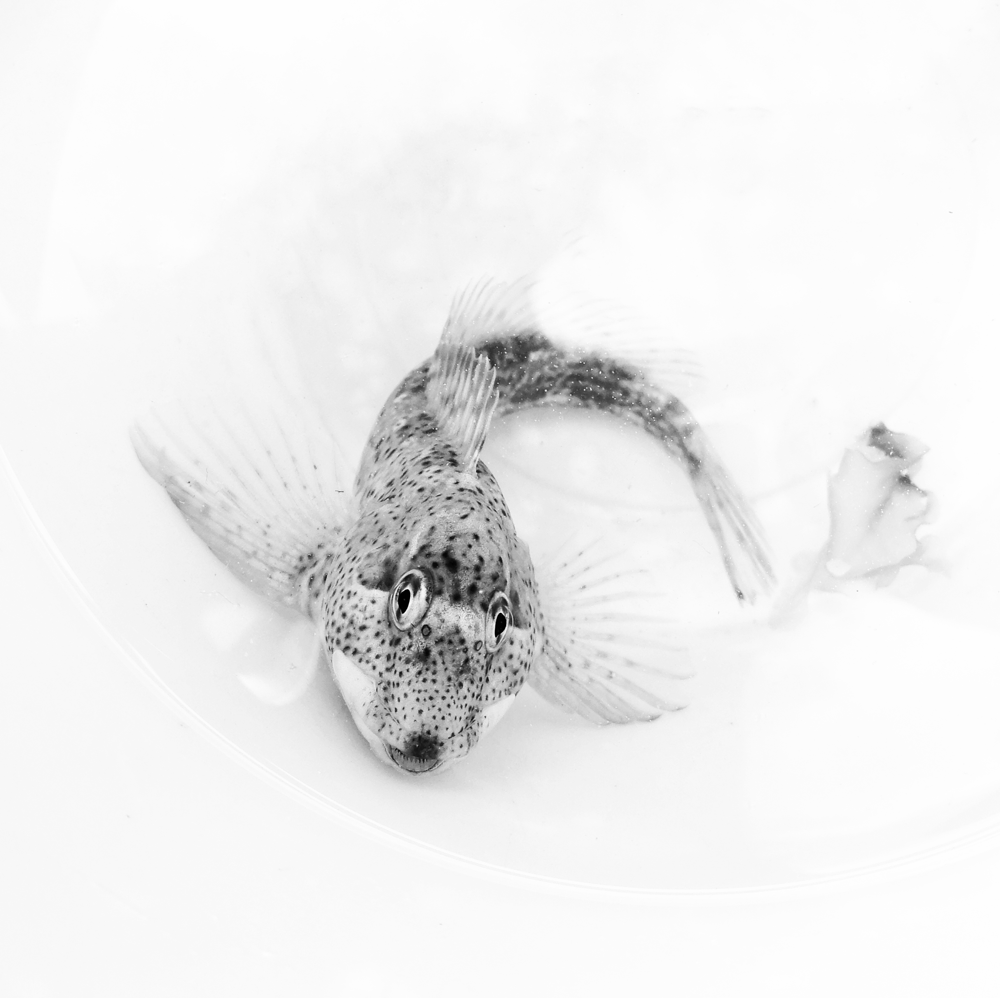
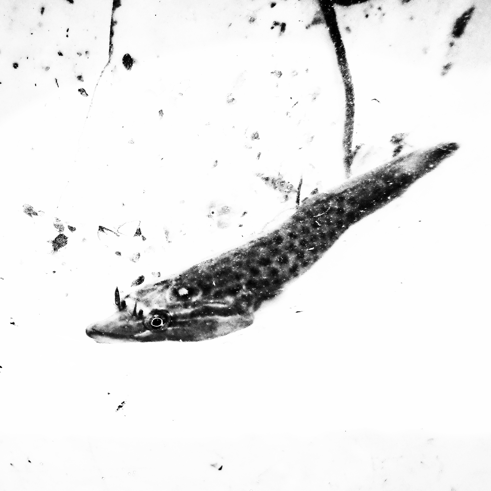
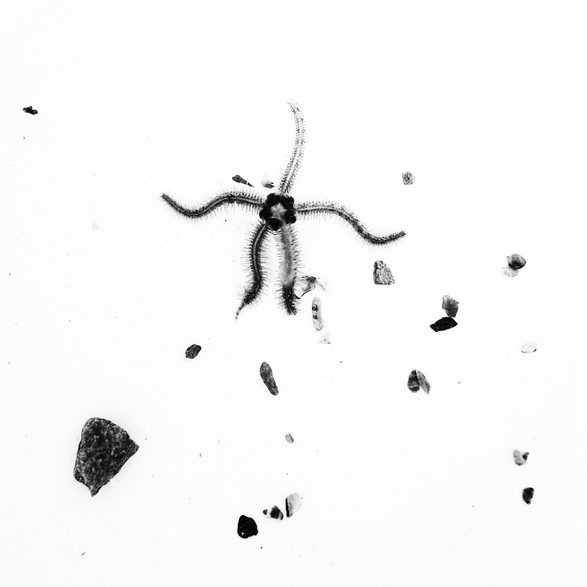
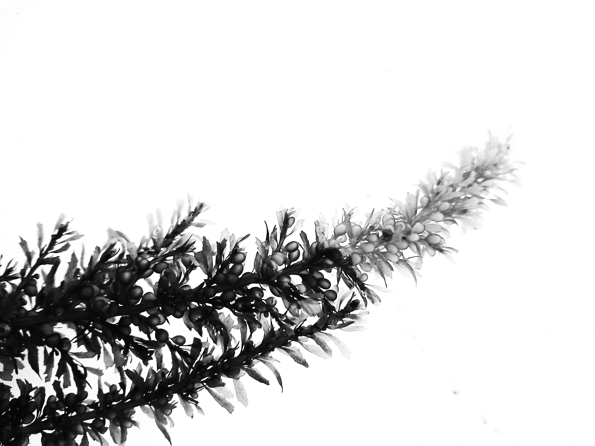
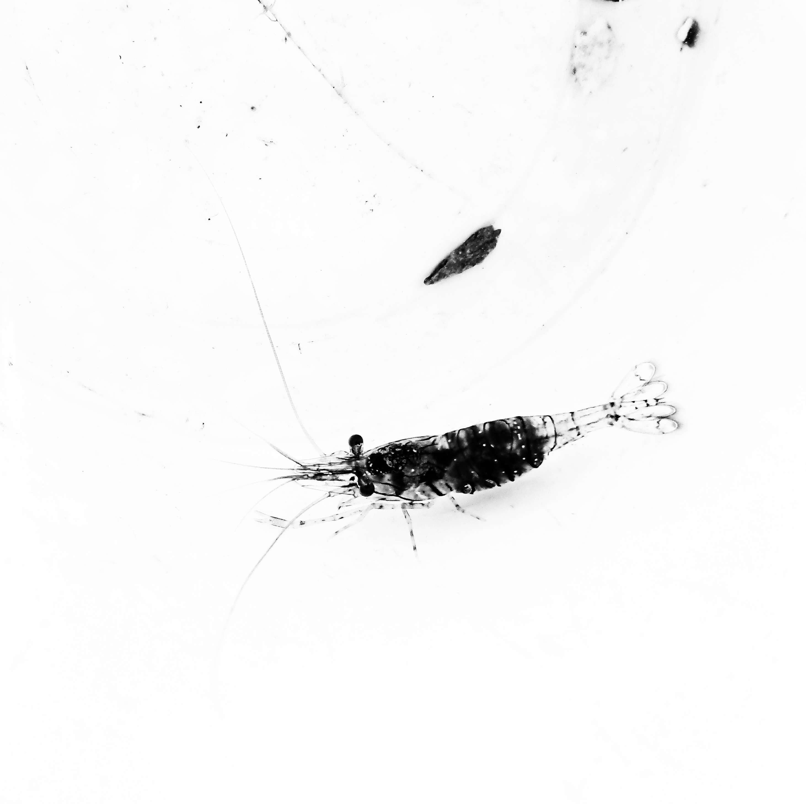
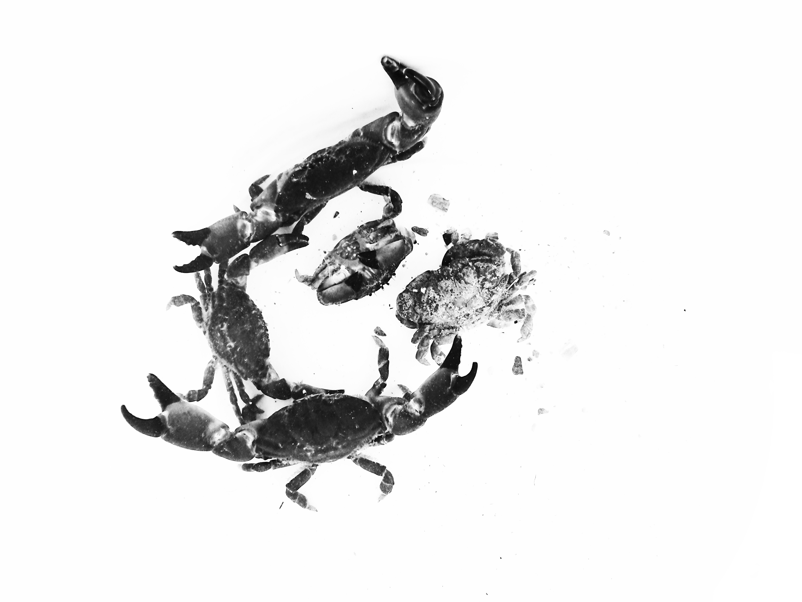

L'estran est depuis neuf ans l'endroit où je me retire, la terre-mer d'un château fantastique dont l'enfant garde la clef qui en ouvre le passage, un monde mouillé de petits êtres qui se faufilent, glissent, bulle de présences étonnantes, lumineuses.
Le temps s'y abandonne en une douce torpeur. Le silence est horizon et les flaques frémissent en petits grelots vifs. Le grondement de la mer au loin retirée rappelle que ce qui est découvert retournera au large et qu'on devra nous aussi s'en retourner sur le rivage, vivre l'autre vie.
Je m'y perds et m'y trouve comme j'ai pu me trouver et me perdre aussi à suivre le fil d'une corde. Les précieux moments de ma vie se situent dans l'intervalle, à patauger dans les flaques, à regarder l'enfant en son île disposer avec soin cailloux et coquilles sur les crêtes des remparts de son château pour les offrir à la mer, et rêver doucement.
Je dédie cette pêche photographique à Yannick qui m'a glissé au creux de la main la clef de ce jardin avant de s'en retourner.
Cailloux, cloportes, hiboux.

Gobi gobé - ©Hélène Bou

Dragon de flaque - ©Hélène Bou

É toile - ©Hélène Bou

Fougère à bulles - ©Hélène Bou

Crevette - ©Hélène Bou

Gavotte de crabes - ©Hélène Bou